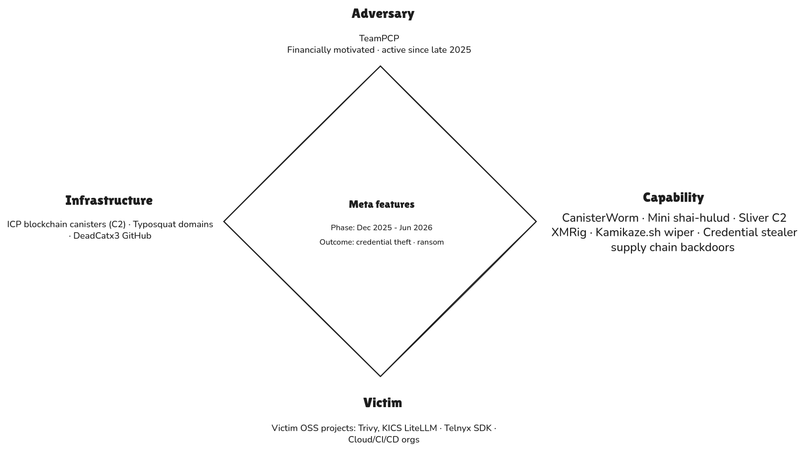

Executive Summary
TeamPCP (aka PCPcat, ShellForce, DeadCatx3, UNC6780, etc.) is a highly skilled financially motivated threat actor that emerged in late 2025. It specializes in multi-stage software supply chain compromises and cloud exploitation, with operations built around automated credential theft and worm-like propagation.
In late 2025 TeamPCP began a large-scale cloud-native worm campaign (exploiting misconfigured Docker/Kubernetes/Ray/Redis services and the CVE-2025-29927 “React2Shell” vulnerability) to build a proxy/botnet infrastructure.
Starting March 2026, the group unleashed a string of major supply chain attacks: compromising the Trivy scanner (Mar 19), then Checkmarx KICS (Mar 21), the LiteLLM PyPI library (Mar 23), and the Telnyx Python SDK (Mar 27). Each phase stole CI/CD and cloud credentials, enabling subsequent stages.
In April–May 2026, TeamPCP expanded into multi-ecosystem supply chain attacks (notably the “Mini Shai-Hulud” campaign): they backdoored SAP-related npm libraries (Apr 29), PyTorch Lightning and Intercom-client (Apr 30), TanStack npm packages (May 11), Microsoft’s DurableTask package (May 19), and others. In mid-May 2026 they also infiltrated GitHub itself via a poisoned VSCode extension (Nx Console, May 20), exfiltrating ~3,800 internal repos. The outcomes have included massive exfiltration of developers’ secrets (CI/CD tokens, SSH keys, API keys, cloud IAM credentials) to TeamPCP-controlled C2 and even use of those credentials by affiliates (e.g. Vect ransomware).
Attribution to TeamPCP is high-confidence across these incidents (despite TeamPCP’s online disclaimers) due to distinctive markers (shared code, commit strings, encryption keys). This report provides a detailed timeline of TeamPCP’s activity, actor background (motivation, capabilities, aliases), TTP mapping, IOCs, and key recommendations for detection and mitigation.
Threat Actor Overview

Names & Aliases
| Alias | Origin | Reference |
|---|---|---|
| TeamPCP | Group’s own chosen name. Telegram group ID is “Team_PCP.” | Telegram channel1 |
| PCPcat | Name of the group’s first documented campaign (Operation PCPcat, Dec 2025). Also used as an X/Twitter handle (@pcpcats). Researchers (Beelzebub) first documented the actor under this name. | Beelzebub research report2 |
| Persy_PCP / PersyPCP | An earlier Telegram identity maintained by the group alongside @team_pcp. The group actively maintains two Telegram channels: @team_pcp and @Persy_PCP. | Socradar, Flare13 |
| ShellForce | Self-confirmed in their own Telegram: “you may already know us as TeamPCP or Shellforce.” | Group’s own Telegram statement (self-attribution) |
| DeadCatx3 | A GitHub account used by the group to host attacker tooling and staging infrastructure. Identified through infrastructure analysis linking it to TeamPCP operations. | Socradar1 |
| UNC6780 | Google Threat Intelligence Group (GTIG). “UNC” prefix denotes an uncategorized/unattributed cluster pending full nation-state attribution. | May 2026 (GitHub breach reporting)4 |
| CipherForce | TeamPCP’s own ransomware brand and leak site operation. Announced as “a newer project we are starting to find affiliates” in their own Telegram. Runs parallel to their Vect ransomware partnership. Victim countdown pages published here. | TeamPCP Telegram (direct self-attribution)5 |
Motivation
Financial gain (credential theft for affiliate ransomware and extortion). The group sells harvested data and its own ransomware brand (“CipherForce”)5 on dark forums. They have pivoted from earlier crypto-mining and opportunistic access (2024-2025) to focused supply chain access-brokering.
TeamPCP sometimes claims political motives (e.g. wiper in payload targeted Iran), but mainstream consensus is criminal profit.
Capabilities
Expert in cloud-native intrusion and CI/CD compromise. They chain exploits (unpatched web apps, exposed Docker/K8s/Ray dashboards, CI workflows) into a credential-stealing pipeline. Key capabilities include GitHub Actions pipeline hijacking, memory scraping for secrets (e.g. dumping GitHub runner process memory), supply chain poisoning (malicious commits or npm/PyPI packages), and advanced payloads (multi-stage stealer/worms, e.g. CanisterWorm, Mini Shai-Hulud, Miasma). They also leverage the Internet Computer Protocol (ICP) blockchain for resilient C2. Their operations are highly automated (e.g. automated npm worm propagation in ~60 seconds) and use strong opsec (ephemeral cloud resources and typosquatted domains).
Affiliations
TeamPCP markets access/breach data on dark forums (they posted on BreachForums and their own Telegram), and has formed a “partnership” with the Vect ransomware group. They claim alliance with LAPSUS$-style extortion groups (ShinyHunters/SLH). Other associated actors include xploit.rs and DarkRomance affiliates. All evidence to date indicates TeamPCP is a criminal group, not state-sponsored.
Attribution Confidence
High for supply chain and credential theft operations; built on consistent tooling and patterns. TeamPCP itself denied some incidents (e.g. Xinference) as copycats, but independent analysis ties those attacks to the same actor profile (shared markers, encryption keys, payload signatures). We note uncertainty where applicable (e.g. “Miasma” worm in RedHat may involve copycats using TeamPCP’s open-sourced code).
Timeline
| Date (2025–2026) | Incident / Campaign | Sector / Region | Vector & TTPs | Attribution | Outcome/Remarks |
|---|---|---|---|---|---|
| Dec 2025 | Cloud Worm Campaign | Global (cloud infra) | Mass exploitation of exposed Docker/K8s/Ray/Redis APIs (T1133); RCE via Next.js CVE-2025-29927 (React2Shell, T1190) | High (Confirmed by Flare report) | Built distributed proxy/scanner network; initial footholds. No payload detected beyond scanning; reconnaissance phase.3 |
| Mar 19, 2026 | Aqua Security Trivy compromise | DevOps Tools / US | GitHub Actions pipeline hijack (stolen bot account token) | High (Vendor confirmed) | Harvested AWS/GCP/Azure IMDS creds, GitHub runner tokens (memory scrape T1057), SSH keys. Seeded further infections via CanisterWorm (npm worm) infecting 47 npm packages. Outcome: credentials exfiltrated; Trivy mirror continued working normally (covert). Prompt roll of Azure/GCP/GitHub tokens recommended.67 |
| Mar 20, 2026 | CanisterWorm npm outbreak | Open-source Ecosystem | Hijacked npm registry token (from Trivy compromise) | High (same op) | Malicious pre/post-install scripts infect downstream projects (credential stealer runs on npm install). Led to secondary compromise of Aqua repos (44 repos defaced). (Indicator: commit message “LongLiveTheResistanceAgainstMachines”).8910 |
| Mar 21, 2026 | Checkmarx KICS compromise | DevOps Tools / Global | Stolen GitHub PAT used to force-push to 35 tags in checkmarx/kics-github-action; also poisoned Checkmarx AST GitHub Action (CI). | High (Vendor confirmed) | Stole similar credentials (GitHub, cloud, SSH); exfil to checkmarx[.]zone. Detected and remediated by Checkmarx. All secrets from pipelines should be assumed compromised.11 |
| Mar 23, 2026 | LiteLLM (PyPI) compromise | Dev/AI Tools / Global | Hijacked PyPI publishing token (likely from Trivy creds) | High (Vendor confirmed) | On import, malware exfiltrated LLM API keys (OpenAI, Anthropic, etc.), SSH keys, cloud creds. All LiteLLM versions in that window were removed. Remediation: rotate all AI/developer tokens, rebuild environments.121314 |
| Mar 27, 2026 | Telnyx SDK compromise | Comm/Infra / Global | Hijacked PyPI publishing token (from earlier) | High (Vendor confirmed) | On import, payload executed and exfiltrated credentials; deployed an Iran-targeted wiper component (privileged DaemonSet “host-provisioner-iran”). Infrastructure keys stolen; multiple OS persistence.151617 |
| Apr 15, 2026 | Vect Ransomware alliance | Cybercrime Forum | Dataminr/industrial announcements | High (third-party intel) | Signals TeamPCP credentials to be used for ransomware; broadens monetization beyond CipherForce.18 |
| Apr 22, 2026 | Checkmarx KICS (multi-channel) | DevOps/Tools | Simultaneous poisoning of Checkmarx KICS Docker Hub (6 tags), VSCode & OpenVSX extensions, and GitHub Actions workflow (T1195). | High (confirmed by Trend/Checkmarx) | Stole GitHub PATs, npm tokens, cloud creds, SSH keys, developer AI config, etc.. Within 24h, stolen npm tokens published poisoned @bitwarden/cli@2026.4.0 (see next). Checkmarx confirmed and rotated secrets. 1911 |
| Apr 22, 2026 | Xinference PyPI compromise | Dev/AI Tools | Hijacked PyPI releases (injected payload into xinference/__init__.py) | Likely TeamPCP (JFrog analysis) | Harvests SSH keys, cloud creds, etc., via background subprocess. Payload identical to other TeamPCP compromise patterns. TeamPCP publicly denied involvement (copycat claim) but telemetry strongly ties it to TeamPCP. Packages were yanked; rotate all secrets if installed.2021 |
| Apr 23, 2026 | Bitwarden CLI hijack | DevOps Tools | Used stolen npm tokens from KICS to publish malicious @bitwarden/cli@2026.4.0 | High (JFrog & palo alto analysis) | Approximately 334 downloads before PyPI quarantine. Credentials stolen like KICS. Bitwarden publicly acknowledged incident. Rotate any keys; monitor npm installations.2223 |
| Apr 24, 2026 | elementary-data (PyPI/GHCR) | Dev/CI (Python) | GitHub Actions runner token hijacked via comment injection (T1586.001); triggered legitimate release pipeline | High (Snyk) | Steals AWS secrets (via API calls to Secrets Manager), GCP/Azure creds, Kubernetes tokens, etc. (as detailed by Trend). Created by exploiting CI without needing stolen credentials. All associated registry tokens and repo secrets are compromised.24 |
| Apr 29, 2026 | SAP CAP npm compromise | Software/Dev (SAP, Global) | Published malicious preinstall hook in SAP CAP npm packages (T1195). | High (vendor confirmed) | Designed to steal developer credentials, GitHub/npm tokens, cloud IAM keys. Exploits Claude Code AI agent hook and VSCode tasks for persistence. ~1,100 fake GH repos noted. Active credential theft; affected packages yanked. Users should rotate all secrets and avoid compromised versions. 2526 |
| Apr 30, 2026 | Lightning & Intercom compromise | Dev/AI / JavaScript | PyPI poisoning of lightning (PyTorch Lightning) and npm of intercom-client (Mini Shai-Hulud wave). | High (multiple researchers) | Lightning payload gathers tokens/secrets, infects npm tarballs, abuses GitHub API (impersonating Anthropic). Intercom postinstall steals similarly. WP results: Lightning quarantined, maintainers investigating. Full credential rotation urged.27 |
| May 11, 2026 | TanStack npm compromise | Web Dev (npm) | Compromised TanStack GitHub build process (OIDC token abuse) | High (Unit42) | Each compromised version ran a Bash credential stealer at install time. Over 160 total npm/PyPI packages (including TanStack) hit by same campaign. Developers urged to remove these and rotate creds.2829 |
| May 12, 2026 | Shai-Hulud code open-sourced | TeamPCP published full Mini Shai-Hulud source on GitHub, encouraging others | High (Akamai) | This action led to copycat waves (e.g. RedHat, Phantom Gyp). Signals shift to commodity malware.30 | |
| May 19, 2026 | DurableTask PyPI compromise | Software/Dev (Microsoft) | Hijacked PyPI releases of durabletask (Microsoft library) | High (Aikido) | On import durabletask, dropper fetched and ran a credential-stealing second stage (Mini Shai-Hulud style). Exfil collected CI and cloud secrets. Packages were removed; any use of these versions requires immediate secret rotation.31 |
| May 19–20, 2026 | GitHub Nx Console breach | Enterprise/Tech (Global) | Poisoned VSCode extension (Nx Console v18.95.0) delivered via editor update | High (GitHub confirm) | GitHub confirmed no customer repos were affected. Investigation is ongoing; internal credentials were rotated as remediation. This is a landmark breach of GitHub’s own infrastructure. TeamPCP claims to be selling this data.32 |
| Jun 1, 2026 | Red Hat Cloud Services npm | DevOps / Global | Compromised RedHat CI pipelines (GitHub Actions OIDC) | Likely (TeamPCP lineage) | Payload steals GitHub actions tokens, cloud creds (AWS, GCP, Azure, Vault, CircleCI, etc.). Aikido notes it closely resembles TeamPCP’s open-sourced Shai-Hulud (“Miasma” variant). RedHat packages yanked; rotate all secrets from any @redhat-cloud-services dependency.33 |
| Jun 3, 2026 | Phantom Gyp npm attack | DevOps / Global | Exploitation of npm binding.gyp files (new install-time hook) | Likely Copycat (Public toolkit) | Largest victim: @vapi-ai/server-sdk. Attackers used TeamPCP’s code (Wiz). Payloads collect creds like prior waves. This is believed to be a copycat utilizing released Shai-Hulud code. Hit packages were removed, secrets should be treated as compromised.34 |
Techniques Used
Reconnaissance
| ID | Name | Use |
|---|---|---|
| T1595.001 T1595.002 | Active Scanning: Scanning IP Blocks | Automated scanners (scanner.py, pcpcat.py) enumerate public IP ranges sourced from the DeadCatx3 GitHub repo. Tools scan for exposed Docker APIs (port 2375), Kubernetes control planes, Redis, and Ray dashboards across large CIDR blocks. Masscan and zgrab used in cloud phase.35 |
Initial Access
| ID | Name | Use |
|---|---|---|
| T1190 | Exploit Public-Facing Application | Exploitation of CVE-2025-55182 (“React2Shell,” CVSS 10.0) and CVE-2025-29927, a Next.js middleware auth bypass. Used in the Dec 2025 cloud campaign to compromise 60,000+ servers. Port 666 is a signature detection artifact from this phase.36 |
| T1133 | External Remote Services | Unauthenticated or misconfigured Docker APIs, Kubernetes kubelet/control-plane APIs, Ray dashboards, and Redis servers used as direct entry points.11 |
| T1195.001 T1195.002 | Supply Chain Compromise Compromise Software Dependencies and Development Tools | Core technique from March 2026 onward. TeamPCP force-pushed malicious code to version tags of aquasecurity/trivy-action, checkmarx/kics-github-action, and poisoned LiteLLM, Telnyx, Bitwarden, TanStack on PyPI/npm. Each compromise used credentials stolen from the previous wave, creating a cascading credential pipeline.11 |
| T1566.001 T1204.002 | Phishing: Spearphishing Attachment | In the May 2026 GitHub breach, a GitHub employee installed a trojanized VS Code extension from the official marketplace. Extension executed environmentAuthChecker.js on activation, pulling a second-stage credential stealer. This single install led to exfiltration of ~3,800 internal repos.37 |
| T1078 | Valid Accounts | The aqua-bot GitHub service account was compromised6 via a late-February breach and credentials were not fully rotated, enabling the March 19 Trivy7 tag-poisoning. Subsequent waves entirely relied on credentials (PATs, npm tokens, OIDC tokens) harvested from prior compromises to authenticate as legitimate maintainers. |
Execution
| ID | Name | Use |
|---|---|---|
| T1059.006 T1059.004 | Command & scripting interpreter: Python & shell | Multi-stage payloads delivered as bash scripts (kamikaze.sh, proxy.sh, mine.sh) and Python scripts (kube.py, react.py, pcpcat.py, scanner.py). kube.py handles Kubernetes lateral movement, wiper, and persistence. All scripts use base64 encoding for obfuscation, sometimes triple-nested.38 |
| T1609 T1610 | Container Administration Command / Deploy container | Docker API and Ray job submission used to execute remote workloads and deploy malicious containers. In the cloud phase, attacker-controlled container images deployed via exposed Docker daemon (port 2375). CanisterWorm also scans local subnets for additional Docker API endpoints to propagate.38 |
| T1204.002 | User Execution: Malicious File | Victims execute the payload simply by running npm install or pip install and the preinstall/postinstall hooks fire the stealer automatically. The .pth persistence file (LiteLLM wave) executes on every Python interpreter startup regardless of whether LiteLLM is imported.15 |
Persistence
| ID | Name | Use |
|---|---|---|
| T1547.001 | Boot or Logon Autostart Execution: Systemd user service | On non-GitHub-Actions machines, a Python persistence dropper is written to ~/.config/systemd/user/sysmon.py. A sysmon.service systemd unit polls the C2 (ICP canister) every 5 minutes. Masquerades as a legitimate system monitoring service. On Windows, persistence via %APPDATA%\Microsoft\Windows\Start Menu\Programs\Startup\.38 |
| T1546.004 | Event Triggered Execution: .pth file Python import hook. | LiteLLM v1.82.8 added a litellm_init.pth file to the Python site-packages/ directory. This fires the stealer payload on every Python interpreter startup. A persistence mechanism that survives removal of the LiteLLM package itself. Datadog notes this was later replaced by IDE hook techniques (VSCode tasks) in the Shai-Hulud open-source framework.39 |
| T1053.003 | Cron / scheduled task | Cron jobs and scheduled polling tasks used to maintain persistence and repeatedly beacon to C2. The 50-minute beacon interval and 5-minute sysmon polling interval reflect deliberate tuning to evade sandbox analysis that typically times out at 2–3 minutes. |
Privilege Escalation
| ID | Name | Use |
|---|---|---|
| T1611 | Escape to Host | CanisterWorm9 (kube.py wiper component) deploys a privileged Kubernetes DaemonSet to access underlying host filesystems. In cloud environments.8 |
Defense Evasion
| ID | Name | Use |
|---|---|---|
| T1027.003 | Obfuscated Files or Information: steganography (WAV/audio encoding) | Telnyx SDK wave (Mar 27): malicious payload hidden inside a WAV audio file (hangup.wav) using audio steganography. The file decodes to a 180 KB Win64 executable. Described as “the first documented offensive use of audio steganography in a PyPI supply chain attack” by multiple researchers.15 |
| T1027.013 | Obfuscated Files or Information: base64 encoding (multi-layer) | Payloads obfuscated with triple-nested base64 encoding. Inner layer contains the C2 endpoint. Scripts also use base64 for Kubernetes lateral movement toolkits. The VS Code extension used base64 encoding for its second-stage pull.38 |
| T1036.005 | Masquerading: vendor-themed typosquat C2 domains | Each wave uses a typosquatted C2 domain designed to blend into CI/CD log output. Known domains include scan.aquasecurtiy[.]org (note transposed i/t), checkmarx[.]zone, models.litellm[.]cloud. Analyst viewing CI logs sees what appears to be a curl to the vendor’s own domain. A new typosquat domain is used per wave to evade blocklists from prior waves.35 |
| T1036 | Malware masquerades as systemd (sysmon.py / sysmon.service) and as a PostgreSQL utility (pgmon) to evade process-level detection. In the Dec 2025 cloud phase, Group-IB noted the actor modified system files and created backdoor users to blend into legitimate activity.38 | |
Credential Access
| ID | Name | Use |
|---|---|---|
| T1552.001 T1552.004 | Unsecured Credentials: Private Keys | Payload sweeps 50+ filesystem paths for: AWS/GCP/Azure credentials, SSH keys, Kubernetes config files, Docker credentials, .env files, cryptocurrency wallets, LLM API keys (OpenAI, Anthropic), npm/PyPI publishing tokens, Git credentials, and PATs. LaZagne used in cloud-phase campaigns.3538 |
| T1555 | Credentials from Password Stores | Bypasses GitHub’s secret-masking mechanism by reading the Runner.Worker process memory directly via /proc/<pid>/mem extracting plaintext tokens before masking can occur. OIDC tokens (used in SLSA Build Level 3 attestations) also extracted from runner memory, enabling token-based package publication that bypasses normal CI steps.35 |
| T1550.001 | Use Alternate Authentication Material: Application Access Token | Stolen GITHUB_TOKEN used to create a repository (tpcp-docs / docs-tpcp) inside the victim’s own GitHub org and push encrypted credential archives that is a fallback exfiltration channel that generates no external network traffic and blends into legitimate GitHub API calls.35 |
Discovery
| ID | Name | Use |
|---|---|---|
| T1082 T1016 T1613 | System / network / container & resource discovery | Environment fingerprinting performed at payload initialization: cloud provider (AWS/GCP/Azure IMDS calls), Kubernetes cluster enumeration, Docker daemon enumeration, instance metadata, IAM roles, available resources. pcpcat.py scans for exposed Docker APIs and Ray dashboards across large IP ranges. IMDS bypass via IMDSv1 to steal cloud instance role credentials. |
Lateral Movement
| ID | Name | Use |
|---|---|---|
| T1021.004 T1098.004 | Account Manipulation: SSH Authorized Keys Remote Services: SSH | SSH keys collected during credential sweep are used to execute the initial script on remote machines, propagating to additional internal hosts. CanisterWorm v3 specifically added SSH key harvesting and local subnet scanning to the payload. PCPJack (competing worm) also observed using TeamPCP-harvested SSH keys for lateral movement.4041 |
| T1080 T1072 | Taint Shared Content Software Deployment Tools | CanisterWorm (Mini Shai-Hulud): upon obtaining npm publishing tokens, an automated script enumerates all packages the token can publish to, bumps the patch version, injects the malicious preinstall hook, and republishes entirely autonomously. 47 npm packages infected in under 60 seconds in the first wave. 42 TanStack packages compromised in ~6 minutes.40 |
Command & Control
| ID | Name | Use |
|---|---|---|
| T1102 | Web service C2: ICP blockchain dead-drop | CanisterWorm uses an Internet Computer Protocol (ICP) blockchain canister as a C2 resolver. ICP canisters cannot be deprovisioned via abuse notices or registrar action. The *.icp0.io gateway is shared infrastructure, making IP-based blocking impractical. Primary C2 falls back to the canister if vendor typosquat domain fails.42 |
| T1008 | Fallback Channels | Three-tier fallback architecture: (1) primary HTTPS POST to typosquat domain; (2) Cloudflare Tunnel endpoint (GitHub-hosted runners); (3) GITHUB_TOKEN used to push encrypted archive to a repo named tpcp-docs/docs-tpcp inside the victim’s own GitHub org. ICP canister serves as additional resilient dead-drop.35 |
| T1572 T1090 | Protocol Tunneling Proxy | Sliver (open-source C2 framework) deployed for post-exploitation command-and-control via mTLS, WireGuard, HTTPS, and DNS. FRP (Fast Reverse Proxy) and GOST tunnel used in cloud-phase campaigns to maintain persistent remote access and relay traffic through operator-controlled systems. Telegram also used for C2 by PCPJack toolset.41 |
Exfiltration
| ID | Name | Use |
|---|---|---|
| T1041 T1022 | Exfiltration Over C2 Channel Archive Collected Data | Credentials bundled as tpcp.tar.gz, encrypted with AES-256-CBC (random session key) then wrapped with a hardcoded RSA-4096 public key (shared across all waves. strongest single attribution marker per SANS ISC). Exfiltrated via curl POST with header X-Filename: tpcp.tar.gz. Over 300 GB of data and 500,000 credentials reported exfiltrated across campaign (vx-underground).15 |
Impact
| ID | Name | Use |
|---|---|---|
| T1485 | Data Destruction: Kubernetes wiper DaemonSet | kube.py wiper component (activated Mar 23, 2026, against Iranian infrastructure): fingerprints environment for Kubernetes clusters, deploys privileged DaemonSets that delete all host filesystem contents and force a node reboot, rendering infrastructure unrecoverable. On non-containerized hosts, performs recursive file deletions. First observed geopolitically targeted destructive action in this campaign. |
| T1496 | Resource hijacking: cryptomining (XMRig / Monero) | XMRig deployed on compromised hosts for unauthorized Monero mining. In later campaigns, TeamPCP shifted to renting computational power to third parties via Mining Rig Rentals rather than self-operating miners. |
| T1657 T1486 | Financial theft data encrypted for ransom | CipherForce ransomware operation targets high-value victims directly. Vect ransomware group partnership (BreachForums). |
References
Footnotes
-
Operation PCPcat: Hunting a Next.js Credential Stealer That’s Already Compromised 59K Servers ↩
-
Threat Alert: TeamPCP, An Emerging Force in the Cloud Native and Ransomware Landscape ↩ ↩2
-
North Korea-Nexus Threat Actor Compromises Widely Used Axios NPM Package in Supply Chain Attack ↩
-
https://github.com/aquasecurity/trivy/discussions/10265 ↩ ↩2
-
Trivy Compromised: Everything You Need to Know about the Latest Supply Chain Attack ↩ ↩2
-
CanisterWorm: How TeamPCP Turned the npm Ecosystem Into a Weapon ↩ ↩2
-
TeamPCP’s CanisterWorm Wiper Targeting Iranian Kubernetes ↩ ↩2
-
Analyzing TeamPCP’s Supply Chain Attacks: Checkmarx KICS and elementary-data in CI/CD Credential Theft ↩ ↩2 ↩3 ↩4
-
Compromised litellm PyPI Package Delivers Multi-Stage Credential Stealer ↩
-
Your AI Stack Just Handed Over Your Root Keys: Inside the litellm PyPI Breach ↩
-
TeamPCP’s Telnyx Attack Marks a Shift in Tactics Beyond LiteLLM ↩ ↩2 ↩3 ↩4
-
The Telnyx SDK on PyPI Compromise and the 2026 TeamPCP Supply Chain Attacks ↩
-
TeamPCP strikes again: Xinference PyPI package compromised ↩
-
TeamPCP Campaign Spreads to npm via a Hijacked Bitwarden CLI ↩
-
Bitwarden CLI Impersonation Attack Steals Cloud Credentials and Spreads Across npm Supply Chains ↩
-
Malicious Release of elementary-data PyPI Package Steals Cloud Credentials from Data Engineers ↩
-
https://community.sap.com/t5/technology-blog-posts-by-sap/cap-developers-call-to-action-to-mitigate-and-apply-solution-provided-in/ba-p/14387683 ↩
-
https://community.sap.com/t5/technology-q-a/compromised-npm-packages-cap-js-sqlite-2-2-2-cap-js-db-service-2-10-1-cap/qaq-p/14387231 ↩
-
PyTorch Lightning and Intercom-client Hit in Supply Chain Attacks to Steal Credentials ↩
-
The npm Threat Landscape: Attack Surface and Mitigations (Updated June 2) ↩
-
Microsoft’s durabletask package on PyPi Compromised. Mini Shai Hulud attacks again… again! ↩
-
https://github.com/nrwl/nx-console/security/advisories/GHSA-c9j4-9m59-847w ↩
-
Node-gyp Supply Chain Compromise: A Self-Propagating npm Worm That Hides in binding.gyp ↩
-
Weaponizing the Protectors: TeamPCP’s Multi-Stage Supply Chain Attack on Security Infrastructure ↩ ↩2 ↩3 ↩4 ↩5 ↩6
-
TeamPCP Worm Exploits Cloud Infrastructure to Build Criminal Infrastructure ↩
-
Linux & Cloud Detection Engineering - TeamPCP Container Attack Scenario ↩ ↩2 ↩3 ↩4 ↩5 ↩6
-
Your AI Gateway Was a Backdoor: Inside the LiteLLM Supply Chain Compromise ↩
-
PCPJack Credential Stealer Exploits 5 CVEs to Spread Worm-Like Across Cloud Systems ↩ ↩2
-
TeamPCP Supply Chain Attack Distributes Information Stealer ↩